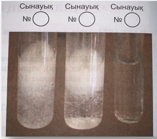

БИОЛОГИЯДАН ЗЕРТХАНАЛЫҚ ЖҮМЫСТАРДЫ
ҰЙЫМДАСТЫРУҒА ҚОЙЫЛАТЫН ТАЛАПТАР
Зертханалың жұмыстар оқу процесін ұйымдастырудың ерекше формасы ретінде биология кабинетінде арнайы қарастырылған уақытта мұғалімнің тікелей жетекшілігімен өткізіледі. Зерттеу объектілері, тәжірибе жасауға арналған құрал-жабдықтар оқушыларға материалды сезе отырып, қабылдау және мұқият зерделеу үшін беріледі.
Зертхана жұмыстарының тиімділігіне келесі талаптарды орындау арқылы қол жетеді:
- Әр жұмыс жүргізер алдында нұсқаулықты мұқият оқыңдар, сұрақтар мен тапсырмаларды түсініңдер. Жұмыс орындауда қиындықтар туындаса оқулықтың
тиісті параграфтарын қараңдар.
- Жұмысты орындаған кезде қауіпсіздік талаптарын сақтаңдар, әсіресе өткір (үшкір) заттарды пайдаланғанда.
- Мұғалімнің жұмысты орындау бойынша нұсқаулығын, тапсырманы түсін- діруін тыңдаңдар.
- Тәжірибелер мен бақылаулар нәтижелерін зертханалық жұмыстарға арналған дәптерге жазбалар, сызбалар, суреттер түрінде белгілеп отырыңдар.
- Жұмысты ұқыпты орындауға, жұмыс орнын таза ұстауға дағдыланыңдар.
- Жұмысты соңына дейін толық жеткізіп орындаңдар.
- Зертханалық жұмыс соңында үдерісті, құбылысты зерттеу немесе бақылау нәтижесі бойынша міндетті түрде қорытынды жасаңдар.
№1 зертханалық жұмыс
«Нәруыздың құрылымына әртүрлі жағдайлардың (температура, рН) әсері»
МАҚСАТЫ: Түрлі жағдайлардың нәруыздар құрылымына әсерін зерттеу.
ҚҮРАЛ-ЖАБДЫҚТАР: суда еріген тауық жұмыртқасының ақуызы; 10 %-дық сірке қышқылы; 10 %-дық натрий гидроксиді (NаОН); ас тұзының 10 % -дық ерітіндісі (NаСІ); қыздырғыш; сынауықтар; тұрғы, крахмал (C6H10O5)n ; йод ерітіндісі.
Зертханалық жұмыстың қадамдары
Жоспарланатын іс-әрекет
| Тақырыптың тұжырымдалуы |
Біз нені зерттейміз? |
Нәруыздардың құрылымына әртүрлі жағдайлардың әсері (температура, pH) |
| Гипотезаның тұжырымдалуы |
Біз қандай нәтиже ала аламыз? |
Егер нәруыз молекуласына жоғары температурамен әсер етсек және рН деңгейін өзгертсек, онда нәруыз денатурациясы болады. |
| Мақсаттың тұжырымдалуы |
Зерттеуді не үшін жүргіземіз? |
Нәруыз құрылымына температура және pH әсерін зерттеу |
| Зерттеу әдісін анықтау |
Бұны қалай (әдіспен) зерттейміз? |
Қыздыру, pH ортасын өзгерту |
| Реактивтер мен жабдықтарды анықтау |
Экспериментті қалай жүргізе аламыз? |
8 мл жұмыртқа альбумині,
1 мл сірке қышқылы, 1 мл NaOH, крахмал, дистильденген су, йод ерітіндісі, pH-метр, тамшуыр, 4 сынауық, сынауыққа арналған штатив, сынауықты ұстағыш, спиртті жанарғы, сіріңке
|
| Жұмыс кезеңдері |
Мақсатқа жету үшін қандай қадамдар жасау керек? |
1.Температураның өзгеруі кезінде нәруыз молекуласы құрылымының өзгеруін зерттеу
2. рН көрсеткішінің өзгеруі кезінде нәруыз молекуласы құрылымын зерттеу
|
| Нәтижелерді графикалық ұсыну тәсілдері |
Зерттеу нәтижелерін қалай ұсынамын/көрсетемін? |
Нәтижелер кестесі |
| Қорытындыларды тұжырымдау |
Зерттеу нәтижесімен не істеймін? |
Нәтижелер температура мен pH нәруыз молекуласының құрылым әсерін түсіндіруге мүмкіндік береді. |
Жалпы жұмыс барысы:
Нәруыз молекуласы құрылымының өзгеруіне темп/ератураның әсерін зерттеу үшін сынауыққа 2 мл жұмыртқа нәруызы салынады. Осыдан кейін сынауық ашық жанып жатқан жалынның үстінде қыздырылады. Бірнеше секундтан кейін нәруыз лайлана бастайды, содан кейін мөлдір емес ақ түске айналады.
pH көрсеткішінің өзгеруінен нәруыз молекуласының құрылымының өзгеруін зерттеу үшін үш сынауыққа 2 мл жұмыртқа альбумині құйылады. Эксперимент нәтижелерін бақылауға ыңғайлы болуы үшін сынауықтар арнайы штативке қойылады және санмен немесе әріптермен таңбаланады. Бірінші сынауыққа тамшуыр арқылы 1 мл тұз қышқылы, екіншісіне 1 мл NaOH, ал үшіншісіне 1 мл дистильденген су қосылады. Үшінші сынауық осы экспериментте бақылауға алынған болады. Барлық үш сынауық бөлме температурасында зерттеледі. Түстің өзгеруі, яғни нәруыздың денатурациясы бірінші және екінші сынауықта қышқыл мен сілтінің (негіз) әсерінен пайда болады, үшінші сынауықта өзгерістер болмайды және ерітінді мөлдір күйінде қалады.
Бірінші экспериментте тәуелді айнымалы жұмыртқа альбуминінің түсі болады, тәуелсіз айнымалы температура, ал бақыланатын айнымалы ерітіндінің көлемі болады. Екінші экспериментте тәуелді айнымалы – зерттелетін нәруыздың түсі, ал тәуелсіз айнымалы pH ортасының деңгейі болады. Бақыланатын айнымалы – бөлменің ауа температурасы мен ерітінділердің көлемі.
Білім алушыларға арналған жұмыс барысы
2.Альбумин нәруызының құрылымына орта pH көрсеткішінің әсері
1) Tұрғыға үш сынауық қойып, санмен немесе әріптермен белгілеңдер.Үш сынауыққа 2 мл жұмыртқа альбуминін құйыңдар.
2) - №1 сынауыққа екі тамшы 10% - дық сірке қышқылы ерітіндісін;
- №2 сынауыққа екі тамшы 10% - дық натрий гидроксиді ерітіндісін;
- №3 сынауыққа екі тамшы дистилденген су қосыңдар.

1-сурет
3) Сынауықтардың ішіндегісін шайқау арқылы абайлап араластырыңдар. Не байқалды? Кестеге бақылау нәтижелерін жазыңдар.
|
Жұмыртқа альбуминіне әртүрлі жағдайлардың
әсер ету шарттары
|
Сынақ сынауықтары
|
|
Жұмыртқа альбумині
өзгерген жоқ |
Температураның әсері |
Негіздік әсері
|
Концентрлі қышқыл
|
дистильденген су |
|
Йодтың әсерінен кейінгі түсі (pH-метр)
|
|
|
|
|
|
4) Нәруыз құрылымына температураның және pH-ортасының әсері туралы қорытынды жасаңдар.
Дескриптор
|
|
Альбуми нәруызының құрылымына температураның әсерін зерттейді.
|
|
|
Сұрақтарға дұрыс жауап береді.
|
|
|
Альбумин нәруызының құрылымына pH- ортасының әсерін зерттейді.
|
|
|
Кестеге бақылау нәтижелерін жазып, түсінік береді.
|
|
|
Нәруыз құрылымына температураның және орта pH-ортасының әсері туралы қорытынды жасайды.
|
Тапсырма
10 сұрақтан тұратын тест тапсырмасы
Тапсырма
«Ақуыздар» квест-веб ойыны